Новая модель для карточки «Хижина из шлакоблоков» по её стилизованному рефу: стены из бетонных блоков, цоколь, плоская кровля из профлиста на деревянной обвязке, два окна с жалюзи, дверь из четырёх досок, бетонная ступень. Размер 3.9 × 3.1 м, стены до 3.0 м; камера и размеры подогнаны по 17 точкам рефа. 63 куска для разрушения. Текстура — методом пропса: четыре светлых листа (поле блоков, цоколь со ступенью, дерево, металл), цвет каждой детали лежит в вершинах, свет запечён только в целый дом. Рисунок листов подогнан по замерам материалов на рефе (разброс светлого и тёмного, мелкий и крупный рисунок, глубина стыков, тон каждого блока), только там, где на рефе нет нарисованного света. 0 платных вызовов. В каталог игры модель не добавлена.
Тыл и левый бок на рефе не видны: левый бок — зеркало правого (то же узкое окно), тыл — глухая стена. Каждая деталь держится за опору и касается её: одна отливка — одно тело, деталь «в» другую — с перекрытием, раздельные детали — стык 2 мм (проверка gap_check.py на всех LOD).
Загрузка модели…
Тяните — вращать · колесо или щипок — зум · правой кнопкой — сдвиг
Референс
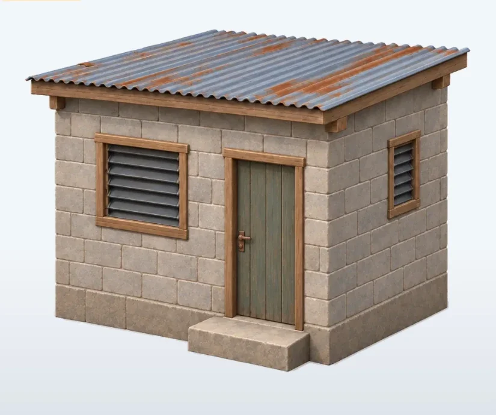
Вариант
LOD
Состояние
Свет
Вращение
Как сделана
Детали против рефа
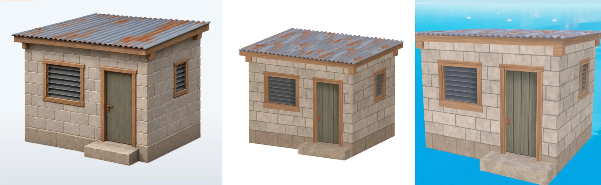
Реф; рендер экспортированного скина, как в игре (цвет × запечённый свет), с камеры рефа; Unity с игровым шейдером
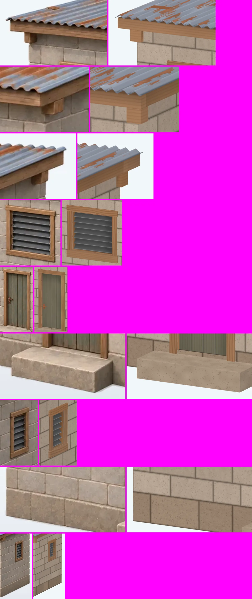
Кропы деталей с камеры рефа, в каждой паре слева реф, справа модель: углы кровли, окно, дверь, ступень, боковое окно, цоколь, бок
В Unity
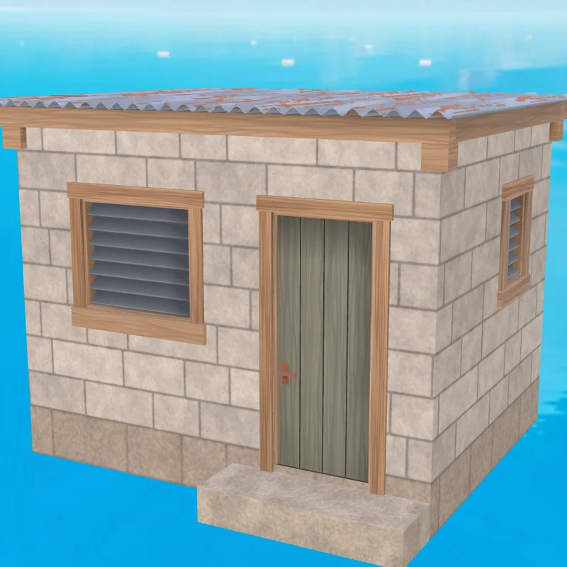
С ракурса рефа
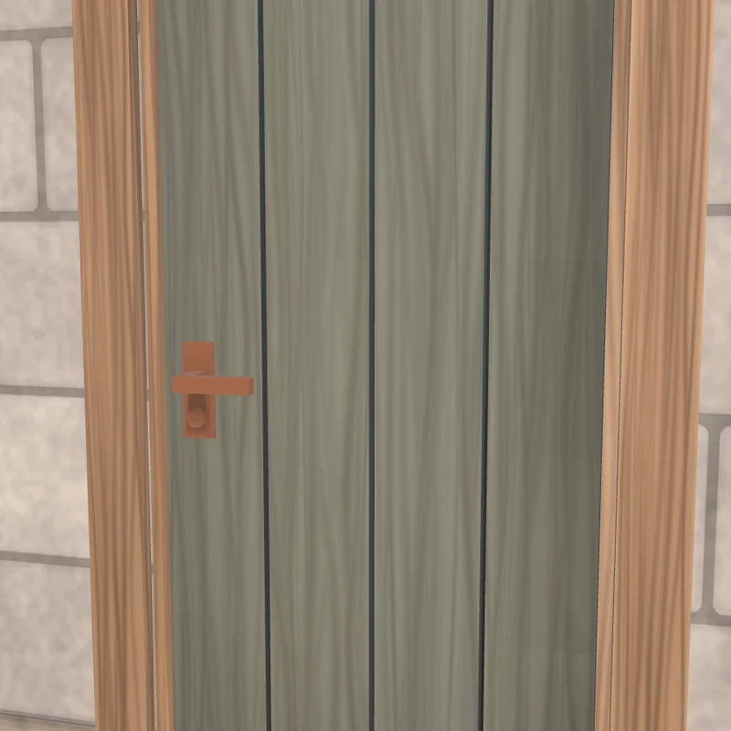
Дверь: четыре доски, тёмные щели, ручка
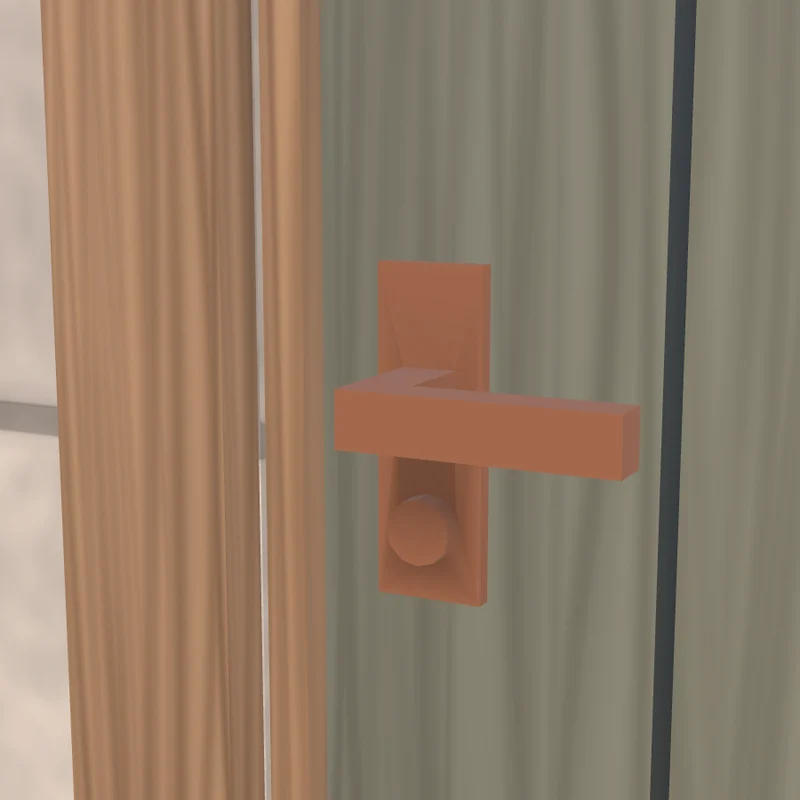
Ручка: накладка на доске, рычаг со штоком — одна отливка, шток уходит в накладку
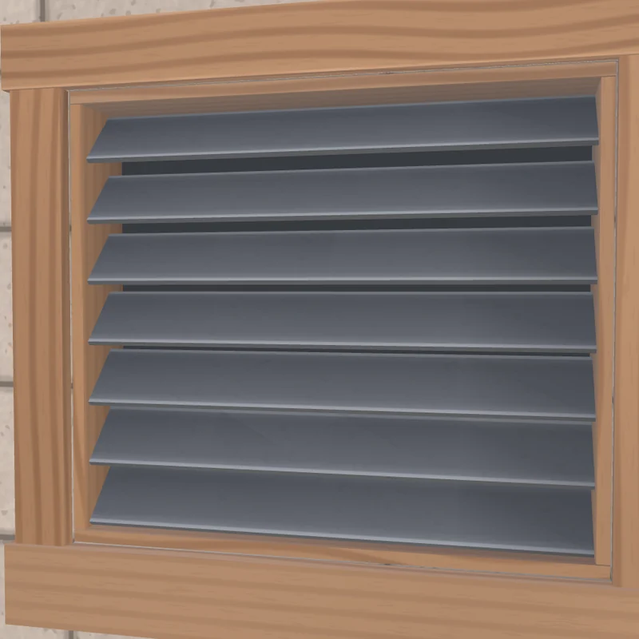
Окно: обвязка на стене, 7 ламелей, сетка за ними
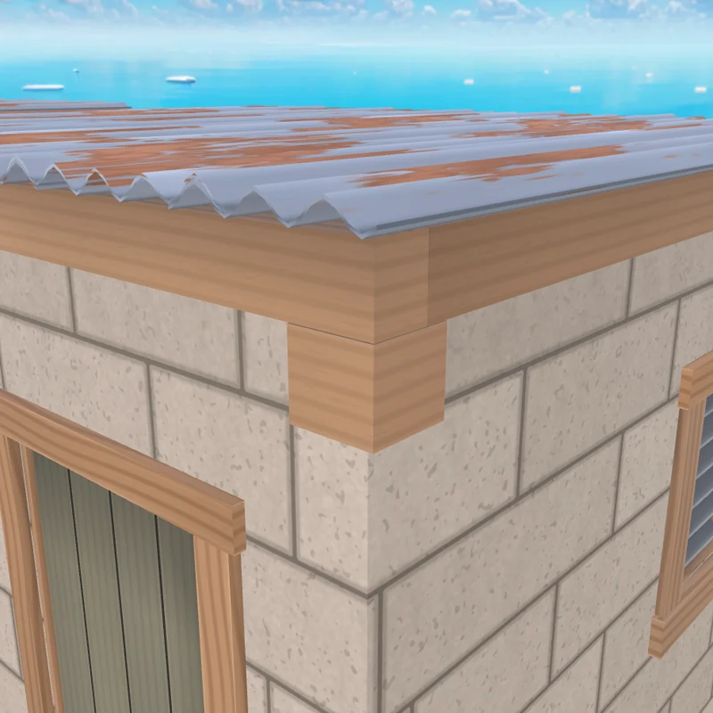
Передний правый угол: брусья сходятся, подушка в углу стены
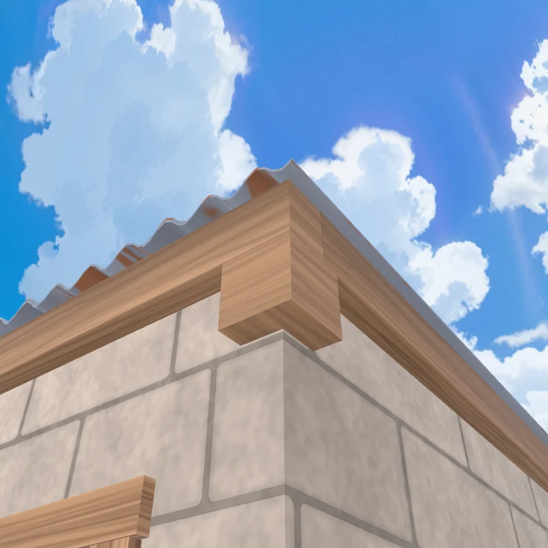
Подушка под брусьями снизу: брус лежит на ней
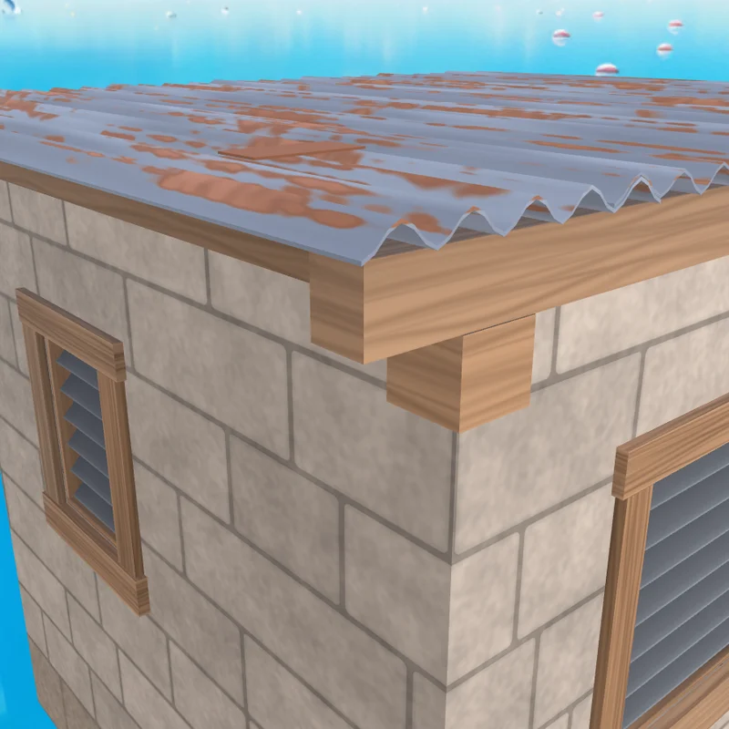
Передний левый угол: брус выходит за стену на 0.31 м
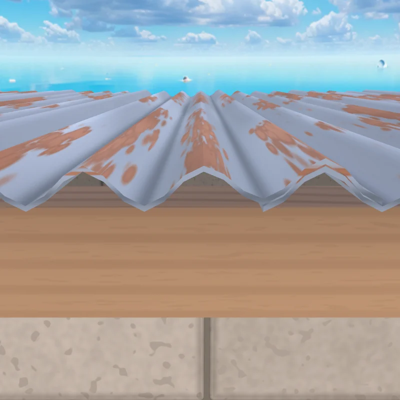
Край кровли: листы лежат на брусе, нахлёст на одну волну
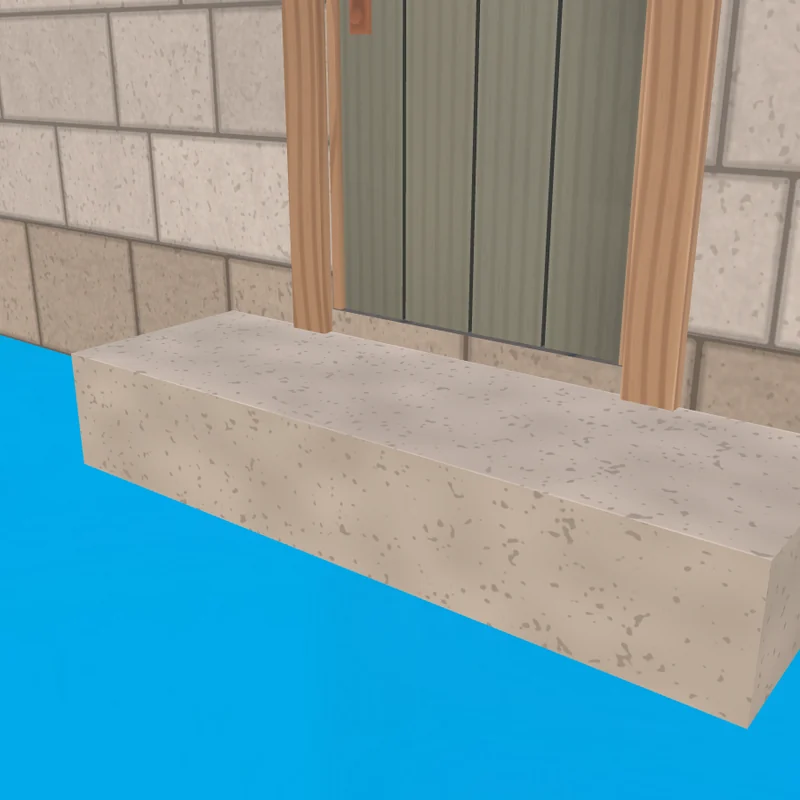
Ступень: косяки стоят на ней
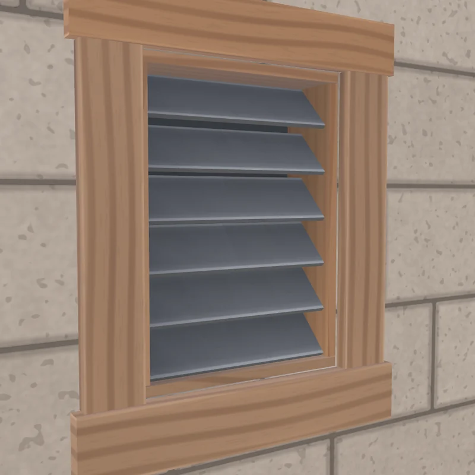
Боковое окно: 6 ламелей
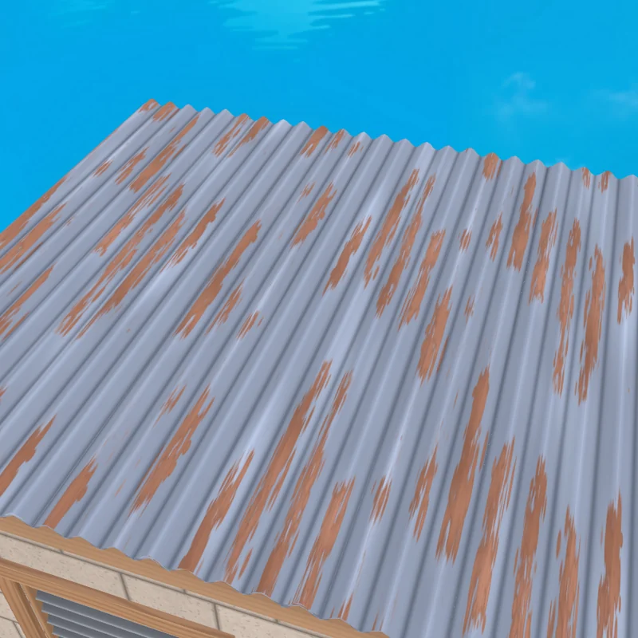
Кровля сверху: ржавчина полосами вдоль гребней, ржавая заплатка